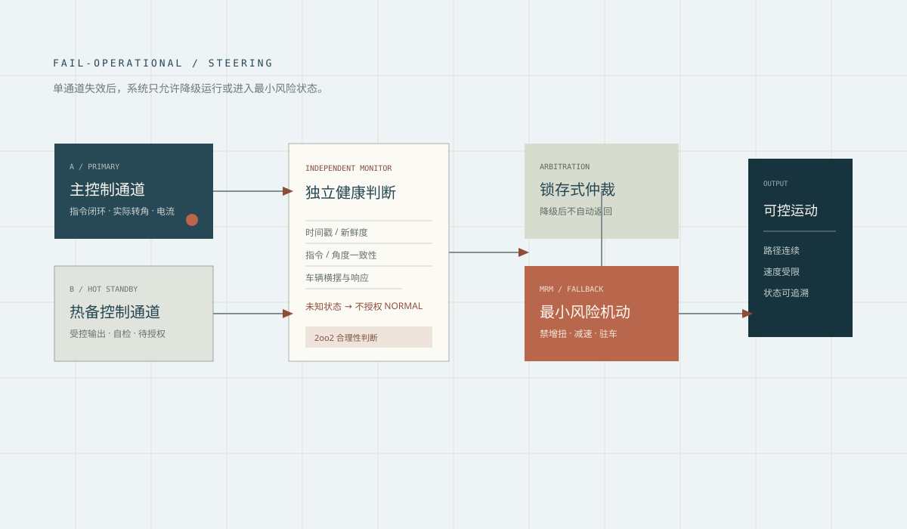

Assignment 03 · SyRS, architecture and STPA
左前转向通道失效下的
系统需求与安全架构
为使需求可验证，本作业把研究对象限定为“15 km/h 城市路口低速左转过程中左前转向执行通道失效”。分析范围覆盖故障检测、仲裁、热备接管、能力声明、MRM 和证据记录。

1. 范围与验收结果
从接收 AD 运动请求到执行器控制、状态反馈和事件记录，不包含感知、路径规划与转向器机械本体设计。
覆盖执行器开路、反馈失效、指令与实际角度持续不一致等可注入故障。
不得在失去有效转向能力后继续声明 NORMAL；最终状态应为 DEGRADED 或 MRM。
初版验证条件为干沥青、转弯半径约 15 m、半载和 15 km/h。50 ms 检测、100 ms 接管、20 km/h 降级上限与 0.3 g MRM 减速度均为待标定基线。
2. 控制结构与初始架构
曲率、目标速度、加速度上限和安全停车请求。
比较指令、角度、电流、温度和通信新鲜度。
决定 NORMAL、DEGRADED、MRM 或 SAFE_STOP。
A 通道正常执行；B 通道自检通过且输出受控。
保持转角连续，限制增扭，协调受控减速。
反馈剩余能力、速度上限、模式原因与事件序列。
双通道有效，正常转向
单通道有效，B 接管并限速
无有效转向能力，受控停车
驻车、隔离、通知和维修确认
3. 系统需求规格
| 编号 | 需求陈述 | 初始验收方向 | 追溯 |
|---|---|---|---|
| FR-01 | 同时监测两个转向通道的指令、实际角度、电流、使能状态和通信新鲜度，并区分有效、降级、未知和故障。 | 两类以上独立证据不一致时不得保持有效。 | SR-09 |
| FR-02 | 主通道失效时锁存故障、阻断错误指令，并切换到已通过自检的热备通道。 | 故障后不自动返回 NORMAL。 | SC-01/02 |
| FR-03 | 切换过程中保持转角目标和横摆趋势连续，不产生阶跃式转向修正。 | 控制周期 10 ms，切换不得触发驱动增扭。 | SC-03 |
| FR-04 | 仅有一个有效转向通道时进入 DEGRADED，限制车速并声明可实现转向能力。 | 建议速度上限 20 km/h，按整车标定。 | SR-09 |
| FR-05 | 没有有效转向通道时拒绝新任务、进入 MRM，并协调制动、驱动和驻车。 | 建议 100 ms 内发出 MRM，减速度不超过 0.3 g。 | SR-10 |
| PR-01 | 固定周期完成健康判断、模式仲裁和转向指令更新。 | 周期 10 ms，抖动目标小于 1 ms。 | 时序基线 |
| PR-02 | 从注入单通道故障到发布降级状态的时间受控。 | 建议检测时间不超过 50 ms。 | SC-01 |
| PR-03 | 热备通道在规定时序内接管并保持指令连续。 | 建议接管完成时间不超过 100 ms。 | SC-03 |
| DR-01 | 记录故障码、模式迁移前后状态、双通道反馈、指令序列和统一时间戳。 | 一次测试可由事件序列独立重建。 | BR-07 |
4. STPA 分析
STPA 重点检查控制器过程模型是否错误、反馈是否新鲜，以及切换动作是否可能引入新的运动风险。
| 危险 | 不安全控制动作 | 因果场景 | 安全约束 | 架构响应 |
|---|---|---|---|---|
| H-01 无法维持预期横向路径 | UCA-01 健康未知时仍发布 NORMAL 和正常速度 | 通信在线被误认为执行器可用；反馈陈旧 | SC-01 未知不授权 NORMAL | 双反馈、新鲜度校验和 2oo2 合理性判断 |
| H-01 无法维持预期横向路径 | UCA-02 备份未完成自检时提前授予执行权 | 方向或零位错误，切换成为新风险 | SC-02 接管前完成自检与授权 | 硬件使能门和锁存式仲裁 |
| H-02 切换产生非预期转向或横摆 | UCA-03 接管时未先限制扭矩就输出大转角 | 力矩冲突、积分饱和 | SC-03 限扭矩、限变化率、保持闭环 | 抗饱和、速率限制和扭矩渐入 |
| H-01 车辆失去方向控制 | UCA-04 无有效转向时继续驱动 | 可用停车距离和路径裕度持续缩小 | SC-04 禁止增扭并进入 MRM | 独立 MRM 协调器和驱动限制 |
| H-02 收敛过程不可预测 | UCA-05 确认无转向能力后延迟请求 MRM | 等待更优决策导致过度延迟 | SC-05 及时禁止增扭并安全停车 | 固定超时、事件记录和驻车准备 |
5. 安全需求与验证
安全需求
SAF-01 未知状态不得声明 NORMAL；SAF-02 故障必须锁存；SAF-03 双通道不得共享单一电源、通信路径或时间源；SAF-04 无有效转向时禁止增扭并进入 MRM；SAF-05 模式迁移需软硬件共同放行；SAF-06 接管期间限制扭矩和转角变化率。
故障注入
VT-01 主通道开路；VT-02 反馈陈旧或卡滞；VT-03 备份不可用；VT-04 共因故障与恢复。测试同时检查模式迁移、时序、车辆轨迹和证据记录。
| 用例 | 注入条件 | 通过证据 |
|---|---|---|
| VT-01 | 15 km/h 定曲率左转中切断 A 通道使能，B 通道热备。 | 检测与接管满足基线；不返回 NORMAL；无驱动扭矩上升。 |
| VT-02 | 保持旧转角值但停止更新时间戳，并制造指令与实际角度不一致。 | 平台判为未知；禁止 NORMAL；完整保存故障快照。 |
| VT-03 | A 通道失效同时使 B 通道自检失败或供电中断。 | 及时请求 MRM；禁止增扭；完成受控减速与驻车。 |
| VT-04 | 断开共享通信或时钟；清除故障码但不维修。 | 共性故障可检测；状态锁存；维修确认后才允许重新自检。 |